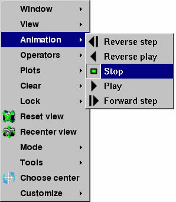

The animation controls in VisIt's Main Window are not the only controls that are provided for playing animations. Each vis window's Popup menu and Toolbar has options for playing and stepping through animations. To play an animation, select the Play option from the Popup menu's Animation menu or click on the Play icon in the Toolbar, shown in figure. To play the animation in reverse, select the Reverse play option or click on the Reverse play icon in the Toolbar. To stop the animation from playing, select the Stop option in the Animation menu or click on the Stop icon in the Toolbar. If you want to advance or reverse one frame at a time, use forward or reverse step.
|  |
| Figure 16 |
| Figure 17 |